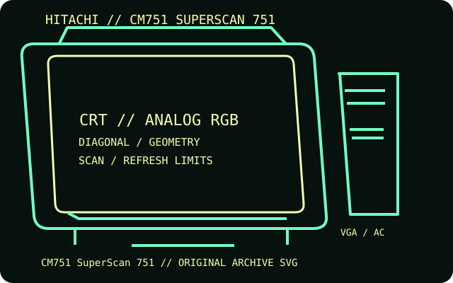

[ INDIVIDUAL COMPONENT // DISPLAYS ]
Hitachi CM751 SuperScan 751
A 19-inch flat-faced SuperScan multiscan shadow-mask monitor with a high-bandwidth analog input.

IDENTIFICATION: Match the complete model and regional suffix on the rear label. Published CRT timing limits do not guarantee a particular used unit's condition; verify the tested host, cable and displayed mode.
Specifications
| Catalog subcategory | CRT displays |
|---|---|
| Exact product / family | Hitachi CM751 SuperScan 751 |
| Tube diagonal & image geometry | 19-inch nominal tube with about 18-inch visible diagonal; flat shadow-mask screen, 0.26 mm dot pitch and 4:3 geometry. OSD supports raster sizing, positioning and geometric correction. |
| Resolution & refresh | Maximum 1600 × 1200; a typical high-resolution timing is 1600 × 1200 at 75 Hz. Horizontal scan range 31–93 kHz, vertical range 50–160 Hz. |
| Video inputs | One 15-pin D-sub analog RGB/VGA input; VESA DDC/DPMS support. No BNC or digital input is listed for the base CM751. |
| Power | Approximately 130 W nominal; below 30 W in power-save and below 5 W when off. Confirm voltage and current on the rear nameplate for the regional unit. |
| Host compatibility | Connect to PC or workstation analog VGA within the listed scan range. To connect HDMI/DisplayPort-only systems, use an active converter capable of the desired pixel clock and analog timing. |
Identification and compatibility notes
The manual groups CM751 and related ET variants in places. This record uses the base CM751's 19-inch-class image and timing details; suffix-specific cabinets or controls may differ.
Record the rear-label model, regional voltage rating, video connector used, source timing, adapter chain, visible image area and geometry/convergence condition. CRTs contain hazardous high-voltage circuits and heavy components; internal service belongs to qualified technicians.
Manufacturer documentation and sources
- Hitachi — CM751 SuperScan 751 user manualModel manual for setup, display timing and controls.
- Hitachi — CM-751 service manual archiveArchived service manual with model-specific technical and electrical data.